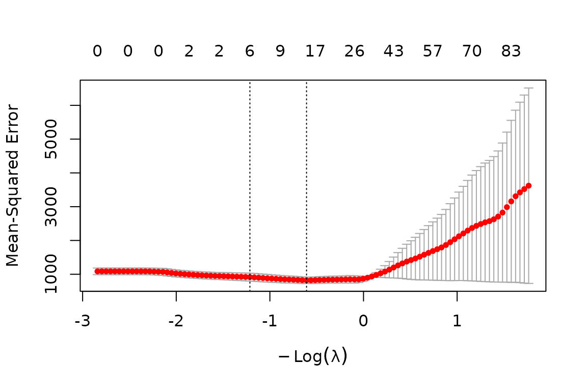

Overview
The introductory and multi-omic vignettes focus on the core Gaussian and binomial workflows. This vignette covers additional stablr capabilities that are easy to miss when reading only the quick-start paths:
| Topic | Functions |
|---|---|
| Survival STABL | stabl_fit(family = "cox") |
| Multinomial classification | stabl_fit(family = "multinomial") |
| Artificial features |
artificial_type = "random_permutation", "knockoff", "knockoff_equi", "knockoff_mvr", or NULL
|
| Grouped bootstrap |
groups, group_bootstrap_indices()
|
| Reproducibility metrics |
jaccard_similarity(), adjusted_similarity()
|
| Disk export |
export_stabl_to_csv(), save_stabl_results()
|
| Outer multi-omic CV | stabl_multiomic_cv() |
| Cooperative diagnostics |
get_cooperative_features(), plot() on native fits |
Examples use small simulated data so the vignette remains fast during R CMD check.
1. Cox proportional-hazards STABL
For time-to-event outcomes, pass a survival::Surv object as y and set family = "cox". Row names of y must match rownames(x).
library(survival)
#> Warning: package 'survival' was built under R version 4.5.2
n <- 80
p <- 15
ids <- paste0("s", seq_len(n))
x_cox <- matrix(
rnorm(n * p), nrow = n,
dimnames = list(ids, paste0("g", seq_len(p)))
)
# Plant signal in first two features
linpred <- 0.9 * x_cox[, 1] - 0.7 * x_cox[, 2]
y_cox <- Surv(time = rexp(n, exp(linpred)), event = rbinom(n, 1, 0.75))
rownames(y_cox) <- ids
lambda_cox <- auto_lambda_grid(x_cox, y_cox, family = "cox", n_lambda = 8)
fit_cox <- stabl_fit(
x = x_cox,
y = y_cox,
lambda_grid = lambda_cox,
family = "cox",
n_bootstraps = 40L,
artificial_type = "random_permutation",
random_state = 42L
)
#> Warning: from glmnet C++ code (error code -6); Convergence for 6th lambda value
#> not reached after maxit=100000 iterations; solutions for larger lambdas
#> returned
#> Warning: from glmnet C++ code (error code -6); Convergence for 6th lambda value
#> not reached after maxit=100000 iterations; solutions for larger lambdas
#> returned
#> Warning: from glmnet C++ code (error code -6); Convergence for 6th lambda value
#> not reached after maxit=100000 iterations; solutions for larger lambdas
#> returned
#> Warning: from glmnet C++ code (error code -7); Convergence for 7th lambda value
#> not reached after maxit=100000 iterations; solutions for larger lambdas
#> returned
#> Warning: from glmnet C++ code (error code -6); Convergence for 6th lambda value
#> not reached after maxit=100000 iterations; solutions for larger lambdas
#> returned
#> Warning: from glmnet C++ code (error code -6); Convergence for 6th lambda value
#> not reached after maxit=100000 iterations; solutions for larger lambdas
#> returned
#> Warning: from glmnet C++ code (error code -7); Convergence for 7th lambda value
#> not reached after maxit=100000 iterations; solutions for larger lambdas
#> returned
#> Warning: from glmnet C++ code (error code -7); Convergence for 7th lambda value
#> not reached after maxit=100000 iterations; solutions for larger lambdas
#> returned
#> Warning: from glmnet C++ code (error code -6); Convergence for 6th lambda value
#> not reached after maxit=100000 iterations; solutions for larger lambdas
#> returned
#> Warning: from glmnet C++ code (error code -8); Convergence for 8th lambda value
#> not reached after maxit=100000 iterations; solutions for larger lambdas
#> returned
get_feature_names_out(fit_cox)
#> character(0)
head(sort(get_importances(fit_cox), decreasing = TRUE), 6)
#> g1 g2 g3 g4 g5 g6
#> 1 1 1 1 1 12. Multinomial STABL
Multinomial outcomes use a named factor y. The stability matrix has one row per feature; importances aggregate across classes.
n <- 90
p <- 12
ids <- paste0("s", seq_len(n))
x_multi <- matrix(
rnorm(n * p), nrow = n,
dimnames = list(ids, paste0("m", seq_len(p)))
)
y_multi <- factor(sample(c("A", "B", "C"), n, replace = TRUE), levels = c("A", "B", "C"))
names(y_multi) <- ids
# Weak class signal from first feature
x_multi[y_multi == "B", 1] <- x_multi[y_multi == "B", 1] + 1.5
x_multi[y_multi == "C", 1] <- x_multi[y_multi == "C", 1] - 1.5
lambda_multi <- auto_lambda_grid(x_multi, y_multi, family = "multinomial", n_lambda = 6)
fit_multi <- stabl_fit(
x = x_multi,
y = y_multi,
lambda_grid = lambda_multi,
family = "multinomial",
n_bootstraps = 30L,
artificial_type = "random_permutation",
random_state = 1L
)
#> Warning in lognet(x, is.sparse, y, weights, offset, alpha, nobs, nvars, : one
#> multinomial or binomial class has fewer than 8 observations; dangerous ground
#> Warning in lognet(x, is.sparse, y, weights, offset, alpha, nobs, nvars, : one
#> multinomial or binomial class has fewer than 8 observations; dangerous ground
#> Warning in lognet(x, is.sparse, y, weights, offset, alpha, nobs, nvars, : one
#> multinomial or binomial class has fewer than 8 observations; dangerous ground
get_feature_names_out(fit_multi)
#> [1] "m1" "m2" "m3" "m5" "m9" "m10"3. Knockoff artificial features
Supported artificial-feature settings are "random_permutation", "knockoff", "knockoff_equi", "knockoff_mvr", and NULL. Model-X knockoffs (artificial_type = "knockoff") provide stronger FDP control than random permutations when the optional knockoff package is installed.
n <- 60
p <- 20
ids <- paste0("s", seq_len(n))
x_ko <- matrix(
rnorm(n * p), nrow = n,
dimnames = list(ids, paste0("k", seq_len(p)))
)
y_ko <- setNames(as.integer(x_ko[, 1] + rnorm(n) > 0), ids)
lambda_ko <- auto_lambda_grid(x_ko, y_ko, family = "binomial", n_lambda = 8)
fit_ko <- stabl_fit(
x = x_ko,
y = y_ko,
lambda_grid = lambda_ko,
family = "binomial",
n_bootstraps = 30L,
artificial_type = "knockoff",
random_state = 7L
)
get_feature_names_out(fit_ko)
#> [1] "k1" "k5" "k7" "k9" "k15" "k17" "k18"4. Grouped bootstrap (repeated measures)
When several rows belong to the same subject or batch, pass a groups vector so bootstrap resampling keeps whole groups together. This prevents leakage across related samples.
n <- 48
p <- 10
ids <- paste0("s", seq_len(n))
groups <- setNames(rep(paste0("subj", seq_len(12)), each = 4), ids)
x_grp <- matrix(
rnorm(n * p), nrow = n,
dimnames = list(ids, paste0("f", seq_len(p)))
)
y_grp <- setNames(rnorm(n) + 0.5 * x_grp[, 1], ids)
# Inspect one grouped draw (whole subjects only)
idx <- group_bootstrap_indices(y_grp, groups = groups, n_subsamples = 24L, seed = 1L)
unique(groups[idx])
#> [1] "subj9" "subj4" "subj8" "subj1" "subj3" "subj10"
lambda_grp <- auto_lambda_grid(x_grp, y_grp, family = "gaussian", n_lambda = 6)
fit_grp <- stabl_fit(
x = x_grp,
y = y_grp,
groups = groups,
lambda_grid = lambda_grp,
family = "gaussian",
n_bootstraps = 25L,
artificial_type = "random_permutation",
random_state = 3L
)
length(get_feature_names_out(fit_grp))
#> [1] 10The same groups argument is forwarded by stabl_multiomic_train_validate() and stabl_multiomic_cv() for outer fold construction.
5. Reproducibility across repeated fits
Selection-stability metrics compare feature lists from repeated STABL runs. Jaccard similarity is the simplest overlap measure; adjusted similarity corrects for chance overlap when set sizes differ.
run_once <- function(seed) {
stabl_fit(
x = x_grp, y = y_grp, groups = groups,
lambda_grid = lambda_grp,
family = "gaussian",
n_bootstraps = 20L,
artificial_type = "random_permutation",
random_state = seed
)
}
fit_a <- run_once(11L)
fit_b <- run_once(22L)
sel_a <- get_feature_names_out(fit_a)
sel_b <- get_feature_names_out(fit_b)
jaccard_similarity(sel_a, sel_b)
#> [1] 0
adjusted_similarity(sel_a, sel_b, nb_total_elements = ncol(x_grp))
#> [1] 0
# Pairwise matrix across several seeds
fits <- lapply(11:14, run_once)
sels <- lapply(fits, get_feature_names_out)
jaccard_matrix(sels)
#> [,1] [,2] [,3]
#> [1,] 0 0 0
#> [2,] 0 0 0
#> [3,] 0 0 0
#> [4,] 0 0 06. Export results to disk
export_stabl_to_csv() writes stability-score tables for a single-omic fit. save_stabl_results() bundles scores, diagnostics, selected-feature tables, and feature-distribution figures for a full analysis folder. It writes STABL scores.csv, Max STABL scores.csv, FDR Graph.<fmt>, Stability Path.<fmt>, Selected Features/Selected features.csv, and Selected Features/Feature distributions.<fmt> when the relevant diagnostics and selected features are available.
tmp <- tempfile("stablr_export")
dir.create(tmp)
export_stabl_to_csv(fit_grp, path = file.path(tmp, "grp"))
list.files(file.path(tmp, "grp"))
save_stabl_results(
object = fit_grp,
path = file.path(tmp, "bundle"),
x = x_grp,
y = y_grp,
task_type = "regression",
figure_fmt = "png",
override = TRUE
)7. Outer cross-validation for multi-omic workflows
When no fixed validation split exists, stabl_multiomic_cv() runs STABL (and optional fusion branches) on rotating outer folds. Cooperative fusion is supported here; nested CV (stabl_multiomic_nested_cv()) does not forward cooperative mode.
n <- 50
ids <- paste0("s", seq_len(n))
x_a <- matrix(rnorm(n * 8), nrow = n, dimnames = list(ids, paste0("a", 1:8)))
x_b <- matrix(rnorm(n * 8), nrow = n, dimnames = list(ids, paste0("b", 1:8)))
y_cv <- setNames(0.6 * x_a[, 1] - 0.4 * x_b[, 2] + rnorm(n, sd = 0.3), ids)
lambda_cv <- list(
omic_a = auto_lambda_grid(x_a, y_cv, family = "gaussian", n_lambda = 5),
omic_b = auto_lambda_grid(x_b, y_cv, family = "gaussian", n_lambda = 5)
)
cv_fit <- stabl_multiomic_cv(
x_list = list(omic_a = x_a, omic_b = x_b),
y = y_cv,
lambda_grid = lambda_cv,
v = 3L,
family = "gaussian",
n_bootstraps = 15L,
artificial_type = "random_permutation",
random_state = 5L,
cooperative_fusion = TRUE,
rho = c(0, 0.3),
cooperation_nfolds = 3L
)
head(cv_fit$diagnostics)
#> fold omic n_selected threshold max_score cooperative_rho
#> Fold1.1 Fold1 omic_a 0 1 1 0
#> Fold1.2 Fold1 omic_b 0 1 1 0
#> Fold2.1 Fold2 omic_a 0 1 1 0
#> Fold2.2 Fold2 omic_b 0 1 1 0
#> Fold3.1 Fold3 omic_a 0 1 1 0
#> Fold3.2 Fold3 omic_b 0 1 1 0
#> cooperative_lambda cooperative_selection cooperative_selector
#> Fold1.1 0.05605113 cv lambda.min
#> Fold1.2 0.05605113 cv lambda.min
#> Fold2.1 0.06561409 cv lambda.min
#> Fold2.2 0.06561409 cv lambda.min
#> Fold3.1 0.04899060 cv lambda.min
#> Fold3.2 0.04899060 cv lambda.min
#> cooperative_type_measure cooperative_score cooperative_prediction_type
#> Fold1.1 mse 0.11181096 link
#> Fold1.2 mse 0.11181096 link
#> Fold2.1 mse 0.09418983 link
#> Fold2.2 mse 0.09418983 link
#> Fold3.1 mse 0.09615360 link
#> Fold3.2 mse 0.09615360 link
#> cooperative_n_selected
#> Fold1.1 4
#> Fold1.2 4
#> Fold2.1 2
#> Fold2.2 2
#> Fold3.1 2
#> Fold3.2 5
if (!is.null(cv_fit$fold_results[[1]]$cooperative_fusion)) {
get_cooperative_features(cv_fit$fold_results[[1]])
}
#> $omic_a
#> [1] "a1" "a4" "a7" "a8"
#>
#> $omic_b
#> [1] "b1" "b2" "b7" "b8"8. Cooperative coefficient paths (native engine)
The built-in cooperative engine registers plot.multiview() for fitted cooperative models. After a cooperative workflow, the selected fit object lives in $cooperative_fusion$fit.
ool <- load_ool_data(split = "train")
lambda_ool <- list(
cytof = auto_lambda_grid(ool$x_list$cytof, ool$y, n_lambda = 6),
proteomics = auto_lambda_grid(ool$x_list$proteomics, ool$y, n_lambda = 6)
)
coop_fit <- stabl_multiomic_train_validate(
x_train_list = ool$x_list,
y_train = ool$y,
lambda_grid = lambda_ool,
family = "gaussian",
n_bootstraps = 12L,
artificial_type = "random_permutation",
random_state = 42L,
cooperative_fusion = TRUE,
rho = 0.3,
cooperation_nfolds = 3L
)
cf <- coop_fit$cooperative_fusion
get_cooperative_diagnostics(coop_fit)
#> rho lambda metric_value selected
#> 1 0.3 1.837652 822.1126 TRUE
plot(cf$fit)
Related vignettes
-
vignette("stablr-intro")— single-omic STABL, learners, diagnostic plots. -
vignette("stablr-multiomic")— early and late fusion on OOL data. -
vignette("stablr-cooperative")— cooperation strengthrho, validation vs CV tuning, binomial cooperative fusion. -
docs/PYTHON_TO_R_MAPPING.md— mapping to the Python tutorial API.